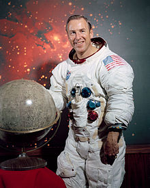

Jim Lovell
by Dave Wright
James Arthur Lovell Jr. is a retired American astronaut, naval aviator, and mechanical engineer. In 1968, as command module pilot of Apollo 8, he became one of the first three humans to fly to and orbit the Moon. He then commanded the 1970 Apollo 13 lunar mission which, after a critical failure en route, circled around the Moon and returned safely to Earth through the efforts of the crew and mission control.
Lovell had previously flown on two Gemini missions, Gemini 7 in 1965 and Gemini 12 in 1966. He was the first person to fly into space four times.
One of 24 people to have flown to the Moon, Lovell was the first person to fly to it twice. He is a recipient of the Congressional Space Medal of Honor and the Presidential Medal of Freedom (in 1970, as one of 17 recipients in the Space Exploration group), and co-author of the 1994 book Lost Moon, on which the 1995 film Apollo 13 was based.

Early Life
Born in 1928 in Cleveland, Ohio, James Lovell was the only child of his mother Blanche (Masek), who was of Czech descent, and his father, James, Sr., an Ontario, Canada-born coal furnace salesman, who died in a car accident in 1933. For about two years, Lovell and his mother lived with a relative in Terre Haute, Indiana. After relocating with his mother to Milwaukee, Wisconsin, he graduated from Juneau High School. A member of the Boy Scouts during his childhood, Lovell eventually achieved Eagle Scout, the organization's highest level.
Lovell became interested in rocketry and built flying models as a boy. After graduating from high school, he attended the University of Wisconsin–Madison for two years under the "Flying Midshipman" program from 1946 to 1948. While at Madison, he played football and pledged to the Alpha Phi Omega fraternity.
While Lovell was attending pre-flight training in the summer of 1948, the navy was beginning to make cutbacks in the program, and cadets were under a great deal of pressure to transfer out. There were concerns that some or most of the students who graduated as Naval Aviators would not have pilot billets to fill. This threat persisted until the outbreak of the Korean War in 1950. Lovell applied and was accepted to the United States Naval Academy in the fall of 1948. During his first year, he wrote a treatise on the liquid-propellant rocket engine. He attended Annapolis for the full four years, graduating as an ensign in the spring of 1952 with a B.S. degree. He then went to flight training at NAS Pensacola from October 1952 to February 1954.
Marriage and Family
In 1952, following his graduation from the Naval Academy, Lovell married his high school sweetheart, Marilyn Lillie Gerlach (born July 11, 1930), the daughter of Lillie (née Nordrum) and Carl Gerlach. The two had attended Juneau High School in Milwaukee. While she was a college student, Gerlach transferred from Wisconsin State Teachers College to George Washington University in Washington D.C. so she could be near him while he was training in Annapolis.
The couple has four children: Barbara, James, Susan, and Jeffrey. The 1995 film Apollo 13 portrayed the family's home life during the Apollo 13 mission of 1970 with actress Kathleen Quinlan being nominated for a supporting actress Oscar for her performance as Marilyn Lovell.
In 1999 the Lovell family opened "Lovell's of Lake Forest", a fine dining restaurant in Lake Forest, Illinois. The restaurant displayed many artifacts from Lovell's time with NASA, as well as from the filming of Apollo 13. The restaurant was sold to son and executive chef James ("Jay") in 2006. The restaurant was put on the market for sale in February 2014 and closed in April 2015, with the property auctioned the same month.
United States Navy
Lovell was designated a Naval Aviator on February 1, 1954. Upon completion of pilot training, he was assigned to VC-3 at Moffett Field near San Francisco, California. From 1954 to 1956 he flew F2H-3 Banshee night fighters. This included a WestPac deployment aboard the carrier USS Shangri-La, when the ship emerged from refit as only the second USN carrier with the new angled deck. Upon his return to shore duty, he was reassigned to provide pilot transition training for the F3H Demon. In January 1958, Lovell entered a six-month test pilot training course at what was then the Naval Air Test Center (now the U.S. Naval Test Pilot School) at Naval Air Station Patuxent River, Maryland. Two of his classmates were Pete Conrad and Wally Schirra; Lovell graduated first in his class.
Later that year, Lovell, Conrad, and Schirra were among 110 military test pilots selected as potential astronaut candidates for Project Mercury. Schirra went on to become one of the Mercury Seven, with Lovell and Conrad failing to make the cut for medical reasons: Lovell because of a temporarily high bilirubin count in his blood. and Conrad for refusing to take the second round of invasive medical tests.
In 1961 Lovell completed Aviation Safety School at the University of Southern California (USC).
At NAS Patuxent River, Lovell was assigned to Electronics Test (later Weapons Test), with his assigned call sign being "Shaky", a nickname given him by Conrad. He became F4H program manager, during which time John Young served under him. In 1961 he received orders for VF-101 "Detachment Alpha" as a flight instructor and safety engineering officer.
Nasa Career
In 1962 NASA needed a second group of astronauts for the Gemini and Apollo programs. Lovell applied a second time and was accepted into NASA Astronaut Group 2, "The New Nine", as was Conrad.
Gemini 7
Buzz Aldrin and Lovell on the deck of their recovery ship after Gemini 12.
Lovell was selected as backup pilot for Gemini 4. This put him in position for his first space flight three missions later, as pilot of Gemini 7 with Command Pilot Frank Borman in December 1965. The flight's objective was to evaluate the effects on the crew and spacecraft from fourteen days in orbit. This fourteen-day flight set an endurance record making 206 orbits. It was also the target vehicle for the first space rendezvous with Gemini 6A.
Gemini 12
Lovell was later scheduled to be the backup command pilot of Gemini 10. But after the deaths of the Gemini 9 prime crew Elliot See and Charles Bassett, he replaced Thomas P. Stafford as backup commander of Gemini 9A. This again positioned Lovell for his second flight and first command, of Gemini 12 in November 1966 with Pilot Buzz Aldrin. This flight had three extravehicular activities, made 59 orbits, and achieved the fifth space rendezvous and fourth space docking with an Agena target vehicle. This mission was successful because it proved that humans can work effectively outside the spacecraft, paved the way for the Apollo missions, and helped reach the goal of getting man on the Moon by the end of the decade.
Apollo 8
Lovell was originally chosen as command module pilot (CMP) on the backup crew for Apollo 9 along with Neil Armstrong as commander and Buzz Aldrin as lunar module pilot (LMP). Apollo 9 was planned as a high-apogee Earth orbital test of the Lunar Module (LM). Lovell later replaced Michael Collins as CMP on the Apollo 9 prime crew when Collins needed to have surgery for a bone spur on his spine. This reunited Lovell with his Gemini 7 commander Frank Borman, and LM pilot William Anders.
Construction delays of the first crewed LM prevented it from being ready in time to fly on Apollo 8, planned as a low Earth orbit test. It was decided to swap the Apollo 8 and Apollo 9 prime and backup crews in the flight schedule so that the crew trained for the low-orbit test could fly it as Apollo 9, when the LM would be ready. A lunar orbital flight, now Apollo 8 replaced the original Apollo 9 medium Earth orbit test. Borman, Lovell and Anders were launched on December 21, 1968, becoming the first men to travel to the Moon.
As CM Pilot, Lovell served as the navigator, using the spacecraft's built-in sextant to determine its position by measuring star positions. This information was then used to calculate required mid-course corrections. The craft entered lunar orbit on Christmas Eve and made a total of ten orbits, most of them circular at an altitude of approximately 70 miles (110 km) for a total of twenty hours. They broadcast black-and-white television pictures of the lunar surface back to Earth. Lovell took his turn with Borman and Anders in reading a passage from the Biblical creation story in the Book of Genesis.
They began their return to Earth on Christmas Day with a rocket burn made on the Moon's far side, out of radio contact with Earth. (For this reason, the lunar orbit insertion and trans-Earth injection burns were the two most tense moments of this first lunar mission.) When contact was re-established, Lovell was the first to announce the good news, "Please be informed, there is a Santa Claus." The crew splashed down safely on Earth on December 27.
Apollo 13
Lovell was backup commander of Apollo 11 and was scheduled to command Apollo 14. Instead, he and his crew swapped missions with the crew of Apollo 13, as it was felt the commander of the other crew, Alan Shepard, needed more time to train after having been grounded for a long period by an ear problem. Lovell lifted off aboard Apollo 13 on April 11, 1970, with CM Pilot Jack Swigert and LM Pilot Fred Haise. He and Haise were to land on the Moon.
During a routine cryogenic oxygen tank stir in transit to the Moon, a fire started inside an oxygen tank. The most probable cause determined by NASA was damaged electrical insulation on wiring that created a spark that started the fire. Liquid oxygen rapidly turned into a high-pressure gas, which burst the tank and caused the leak of a second oxygen tank. In just over two hours, all on-board oxygen was lost, disabling the hydrogen fuel cells that provided electrical power to the Command/Service Module Odyssey. This required an immediate abort of the Moon landing mission; the sole objective now was to safely return the crew to Earth.
Apollo 13 was the second mission not to use a free-return trajectory, so that they could explore the western lunar regions. Using the LM as a "life boat" providing battery power, oxygen, and propulsion, Lovell and his crew re-established the free return trajectory that they had left, and swung around the Moon to return home. Based on the flight controllers' calculations made on Earth, Lovell had to adjust the course twice by manually controlling the Lunar Module's thrusters and engine. Apollo 13 returned safely to Earth on April 17.
Lovell is one of only three men to travel to the Moon twice, but unlike John Young and Gene Cernan, he never walked on it. He accrued over 715 hours, and had seen a total of 269 sunrises from space, on his Gemini and Apollo flights. This was a personal record that stood until the Skylab 3 mission in July through September 1973. Apollo 13's flight trajectory gives Lovell, Haise, and Swigert the record for the farthest distance that humans have ever traveled from Earth.
Later Career
Lovell retired from the Navy and the space program on March 1, 1973 and went to work at the Bay-Houston Towing Company in Houston, Texas, becoming CEO in 1975. He became president of Fisk Telephone Systems in 1977, and later worked for Centel, retiring as an executive vice president on January 1, 1991. Lovell was a recipient of the Distinguished Eagle Scout Award. He was also recognized by the Boy Scouts of America with their prestigious Silver Buffalo Award.
Lovell and Jeffrey Kluger wrote a 1994 book about the Apollo 13 mission, Lost Moon: The Perilous Voyage of Apollo 13. It was the basis for the 1995 Ron Howard film Apollo 13. Lovell's first impression on being approached about the film was that Kevin Costner would be a good choice to portray him, given the physical resemblance, but Tom Hanks was cast in the role. In order to prepare, Hanks visited Lovell and his wife at their home in Texas and even flew with Lovell in his private airplane.
In the film, Lovell has a cameo as the captain of the USS Iwo Jima, the naval vessel that led the operation to recover the Apollo 13 astronauts after their successful splashdown. Lovell can be seen as the naval officer shaking Hanks' hand, as Hanks speaks in voice-over, in the scene where the astronauts come aboard the Iwo Jima. Filmmakers initially offered to make Lovell's character an admiral aboard the ship. However, Lovell said, "I retired as a Captain and a Captain I will be." He was cast as the ship's skipper, Captain Leland E. Kirkemo. Along with his wife Marilyn, who also has a cameo in the film, he provided a commentary track on both the single disc and the two-disc special edition DVD.
He has served on the Board of Directors for several organizations, including Federal Signal Corporation in Chicago (1984–2003), Astronautics Corporation of America in his hometown of Milwaukee (1990–1999), and Centel Corporation in Chicago (1987–1991).
Sources
"Astronaut Bio: James A. Lovell" (PDF). NASA. December 1994. Retrieved April 12, 2021.
"Lovell". Encyclopedia Astronautica. Archived from the original on January 6, 2019. Retrieved December 16, 2016.
Burgess, Colin (2011). Selecting the Mercury Seven: The Search for America's First Astronauts. New York: Springer Science & Business Media.
"Apollo 8 Crew Honored". Valley Times. North Hollywood, California. UPI. April 3, 1969. p. 2 – via Newspapers.com.
Lovell, Jim; Kluger, Jeffrey (1995). Apollo 13: Lost Moon. New York: Pocket Books.
Lovells Given Big Reception in Milwaukee". Chicago Tribune. Associated Press. February 24, 1966. p. 4-2A – via Newspapers.com.
McElheny, Victor K. (August 15, 1970). "Armstrong, Aldrin, Collins on Moon again–as Names". The Boston Globe. Boston, Massachusetts. p. 16 – via Newspapers.com.